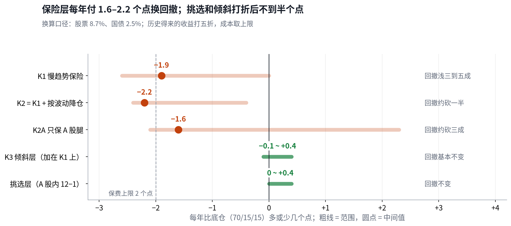
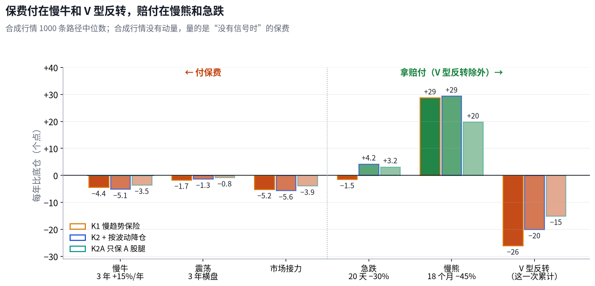
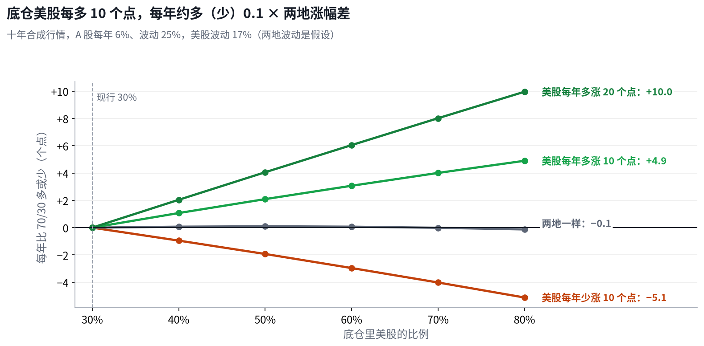

v6 预演预测表
保险层每年约付 1.6–2.2 个点、换回撤砍掉三到五成；挑选和倾斜打折后每年不到半个点
项目愿景 在动态周期内，从多类资产里选出 Top N 强势 ETF 轮动持有，获得超额收益、稳定跑赢被动基准，同时把回撤控制住。
| 名字 | 是什么 |
|---|---|
| K0 底仓 | 基准本身：沪深300 70% + 纳指100 15% + 标普500 15%，每月再平衡。所有“多或少几个点”都和它比。 |
| K1 慢趋势保险 | 每条腿月末低于自己的 10 个月均线，就换成国债；回到均线上方换回（Faber 2007）。 |
| K2 按波动降仓 | K1 再加一条：每条腿的仓位 = 长期波动 ÷ 近 20 日波动，最多 1；每周看一次，变化不到 10 个点不动。 |
| K2A 只保 A 股腿 | K2 的规则只用在 A 股腿上，美股腿一直持有。 |
| K3 倾斜层 | 在 K1 上，A 股和美股比 12 个月涨幅（跳过最近 1 个月），每月把 20 个点挪给强的一边。 |
| 挑选层 | 同一市场里按 12−1 涨幅排名挑 ETF。这一轮只测准确度，没跑组合。 |
| 合成行情 | 人工造的六种行情，噪声取真实指数的日收益重抽；里面没有动量，量的是“没有信号时”的保费。 |
| 打五折 | 从历史数据算出来的进出时点和挑选收益一律乘 0.5；成本按上限、不打折。 |
| 不做线 | 跑之前写下的及格线，达不到就不进 v6；看到结果后不改。 |
01预测表：保险层每年付 1.6–2.2 个点换回撤，挑选和倾斜打折后不到半个点
K2 每年约 −2.2、回撤约砍一半；K2A 约 −1.6、回撤约砍三成；倾斜和挑选打折后都在 0 到 +0.4 之间。

| 层 | 仓位差 | 挑选 | 进出时点（打五折） | 成本 | 合计 | 回撤 | 把握 | 不做线结论 |
|---|---|---|---|---|---|---|---|---|
| K1 慢趋势保险 | −2.2（−2.5 ~ −1.2） | 0 | +0.7（+0.3 ~ +1.7） | −0.4 | −1.9（−2.6 ~ 0.0） | 浅三到五成；V 型和短急跌无效 | 中 | 没过 保费、急跌两条 |
| K2 = K1 + 按波动降仓 | −2.5（−2.6 ~ −1.3） | 0 | +0.8（+0.7 ~ +1.4） | −0.5 | −2.2（−2.4 ~ −0.4） | 比 K1 再浅 2–9 个点；急跌也有效 | 中 | 只差保费一条 |
| K2A 只保 A 股腿 | −1.7（−2.2 ~ −1.1） | 0 | +0.5（+0.5 ~ +3.8） | −0.4 | −1.6（−2.1 ~ +2.3） | 浅约三成；美股的回撤照单全收 | 中低 | 没过 保费、急跌两条 |
| K3 倾斜层（加在 K1 上） | 0 | 0 | 0 ~ +0.5 | −0.1 | −0.1 ~ +0.4 | 基本不变 | 低 | 没过 期望为正没证据 |
| 挑选层 A 股内 12−1，月度 | 0 | +0.2 ~ +0.6 | 0 | −0.2 | 0 ~ +0.4 | 不变 | 低 | 待定 缺长历史 |
| 参照：底仓美股每多 10 个点 | — | — | — | 0 | 0.1 × 两地涨幅差 | 取决于两地波动 | 算术 | 不是策略层 |
换算口径：股票每年 8.7%（基准这十年的实际年化）、国债 2.5%。
- “仓位差”是保费的主体：K1、K2 平均只拿 60–66% 的股票，少拿的部分按“股票 − 国债”算。长历史里这一项看起来很小（标普 −0.4），是因为那几十年现金利率平均 5.5%；按现在的利率换算是 −2.2 到 −2.5。
- 进出时点在三个市场都是正的：未打折是标普 +1.4、恒生 +0.6、日经 +3.4，来自躲开慢熊。
- K2A 的范围很宽：中间值用恒生（独立市场，作 A 股腿的代理）；上限 +3.8 来自沪深300 2006–2015 的回放（每年 +3.5、回撤 −72% → −40%），但那一段是用过上百次的设计期，只作一致性检查，不当证据。
- 挑选层的锚：E2 新口径比同池等权每年 +1.1（设计期）、+0.4（检验段，已签收）；A 股行业 12−1 排名的月度准确度两段都是正的（第 4 节），打五折后约 +0.2 到 +0.6。
02每种行情：保费付在慢牛和 V 型反转，赔付在慢熊和急跌
慢牛里 K2 每年少赚 5.1；慢熊里多赚 29；V 型反转一次少 20 个点。合成行情没有动量，这些是“没有信号时”的保费。

| 行情 | K1 每年 | K2 每年 | K2A 每年 | K3 每年 | 读法 |
|---|---|---|---|---|---|
| 慢牛 | −4.4 | −5.1 | −3.5 | −4.8 | 保费最贵 |
| 急跌 | −1.5 | +4.2 | +3.2 | −1.8 | K2 最有用 |
| 慢熊 | +29 | +29 | +20 | +28 | 赔付最大 |
| V 型反转 | −26 | −20 | −15 | −26 | 最怕的行情 |
| 震荡 | −1.7 | −1.3 | −0.8 | −2.3 | 小亏换回撤 |
| 市场接力 | −5.2 | −5.6 | −3.9 | −4.0 | 倾斜层唯一有用 |
| 行情 | K0 | K2 | K2A |
|---|---|---|---|
| 慢牛 | −15% | −12% | −12% |
| 急跌 | −37% | −24% | −28% |
| 慢熊 | −48% | −11% | −22% |
| V 型反转 | −31% | −23% | −25% |
| 震荡 | −30% | −20% | −22% |
| 市场接力 | −21% | −16% | −16% |
- 成本已经不是问题：五个结构每年双边换手 1.5–4.3 倍，成本 0.15–0.45 个点（v5.1 是 6.4）。
- 真实长历史回放（一直持有 → K2）：标普 1956–2003 年化 +0.5、回撤 −49% → −24%；恒生 1988–2015 −1.0、−65% → −37%；日经 1988–2015 +2.9、−82% → −41%。
- 见底后回来得慢：三个市场平均要 85–120 个交易日才回到半仓，这时离底部已涨 18–25%。
03底仓美股比例：每多 10 个点，每年约多（少）0.1 × 两地涨幅差
美股比 A 股每年多涨 10 个点时，80% 美股比 70/30 每年多 4.9；少涨 10 个点时少 5.1。美股强的十年里，K2A 比 K2 每年少付约 1.5 个点保费。

| 美股比 A 股每年多涨 | K2 比底仓 | K2A 比底仓 | 读法 |
|---|---|---|---|
| −10 个点 | −1.1 | −1.9 | K2 好 A 股强时，K2A 少保护了美股这一边 |
| 0 | −2.8 | −1.9 | K2A 好 |
| +10 个点 | −3.5 | −2.0 | K2A 好 不在美股上付保费 |
| +20 个点 | −3.7 | −2.0 | K2A 好 |
十年合成行情，A 股每年 6%、波动 25%，美股波动 17%（两地波动是假设）。美股比例的回撤：美股多了回撤反而浅，是“美股波动更低、两地相关低”这个假设推出来的；美股弱 10 个点时，80% 的回撤已经比 70% 差。
04信号准确度：三层都弱，只有躲大熊的趋势是硬的
月度准确度（IC）最高 0.15，只出现在 2006–10 年；长历史里市场之间几乎为 0。
| 信号 | 2006–10 | 2011–15 | 长历史 | 读法 |
|---|---|---|---|---|
| ① 自己的 10 个月均线（各容器中位） | 0.15 | −0.01 | 标普 0.04、恒生 −0.02、日经 0.06 | 价值在尾部 平常没信息，躲大熊才有用 |
| ② 市场之间 12−1（A、港、美三地） | 0.13（t 1.4） | 0.08（t 0.8） | 0.005（t 0.1） | 弱 长历史里没有 |
| ③ A 股内挑选 12−1 涨幅 | 0.05（t 0.8） | 0.05（t 0.9） | 缺 | 达到 0.03 的线 两段都正 |
| ③ A 股内挑选 12−1 涨幅 ÷ 波动 | 0.10（t 1.8） | 0.06（t 1.0） | 缺 | 达到 0.03 的线 同上 |
月度秩相关，0 = 没有信息。判定只看登记时定的 12−1；3、6 个月只作参照。
- 美股在 2011–15 年的均线信号是负的：标普 −0.19、纳指 −0.24。稳定的牛市里，跌破均线往往是买点，这是 K2A 的出发点。
- 挑选层的长历史还没有：外部数据（Kenneth French 美国行业组合）待取，见 D38 数据需求。
05不做线：跑前写下的线，没有一层过；K2 只差保费一条
K1 差 2 条、K2 差 1 条、K2A 差 2 条、K3 差 1 条，挑选层待定。
| 条件 | 结果 | 结论 |
|---|---|---|
| K1 慢趋势保险 | ||
| 慢牛每年落后 ≤ 2 | 4.4 | 没过 |
| 急跌和慢熊回撤浅 ≥ 三分之一 | 急跌只浅 13%；慢熊 76% | 没过 |
| 成本 ≤ 1 | 0.27 | 通过 |
| K2 按波动降仓 | ||
| 慢牛每年落后 ≤ 2 | 5.1 | 没过 |
| 急跌和慢熊回撤浅 ≥ 三分之一 | 急跌 35%；慢熊 80% | 通过 |
| 成本 ≤ 1 | 0.39 | 通过 |
| K2A 只保 A 股腿 | ||
| 慢牛每年落后 ≤ 2 | 3.5 | 没过 |
| 急跌和慢熊回撤浅 ≥ 三分之一 | 急跌只浅 24%；慢熊 55% | 没过 |
| 成本 ≤ 1 | 0.28 | 通过 |
| K3 倾斜层和挑选层 | ||
| K3：打折后期望超额为正 | 0 ~ +0.4，长历史 IC 为 0 | 没过 证据不够 |
| K3：最差行情每年落后 ≤ 2（比 K1） | −0.7（震荡） | 通过 |
| 挑选层：两段和长历史 IC 都为正、平均 ≥ 0.03 | 两段 0.05；长历史缺 | 待定 |
- 保费这条线用的是合成慢牛：合成行情没有动量，所以 4.4、5.1、3.5 是“没有信号时”的上限。
- 换到真实口径更低：计入真实利率和真实的进出时点后，K2 平均约 2.2、K2A 约 1.6。这条线是跑之前写下的，不改；两组数字都摆在这里，由你在第 7 节决定。
06你的三个要求：① 能做到，② 做不到，③ 没有测
慢熊里回撤从 −48% 收到 −11%；但见底后要等离底涨了 18–25% 才回到半仓。
| 要求 | 预演的答案 | 结论 |
|---|---|---|
| ① 牛市见顶后撤到债券或现金 | 慢熊回撤从 −48% 到 −11%；急跌要靠按波动降仓（K2），月度均线来不及 | 做到 |
| ② 极端见底后快速回场、抓反转 | 离底 18–25% 才回到半仓；V 型里浮亏变实亏，一次约 −15 到 −26 个点 | 没达到 |
| ③ 震荡市波段做超额 | 原因见诊断第 4 节；保险层在震荡里每年小亏 1–2 个点，回撤浅约 8–10 个点 | 没有测 |
07需要你定：保费上限，建议 K2A，每年约 1.6 个点
K2A 十年约少赚 30 万（按 100 万本金），整体回撤浅约三成；代价是美股的熊市不防。
保费上限：保险层在牛市里每年最多愿意少赚多少
| 选择 | 二阶代价 | 三阶代价 |
|---|---|---|
| 不设保险 | “先为不可胜”只能靠底仓里放债券、黄金来做 | 牛市照样少赚，保费换个地方付 |
| K2A | 美股强的十年里保费比 K2 少一半；A 股强的十年里反而比 K2 差 | 如果下一个十年美股出事，这个选择会很痛 |
| K2 | V 型反转一次就是 −20 个点 | 6 个月模拟盘验不出好坏，只能验“落后的幅度在不在这张表的范围里” |
| 把钱花在美股比例上 | QDII 溢价和限购随比例上升 | 和 2006–2015 那样的十年对赌 |
- 为什么建议 K2A：它是唯一一个按真实口径落在 2 个点以内的保险。
- 保费付在赔付高的地方：A 股的熊市又深又慢，沪深300 设计期最深 −72%。
- 不在最贵的地方付：美股这十年的均线信号是负的，在美股上买保险最贵。
08复算：Reviewer 两次都批准，三处差异都已查清，数字不变
长历史 9 项、信号准确度 7 项、K2A 合成行情 3 种逐位一致；差异来自随机数顺序和预热口径。
| 差异 | 原因 | 处理 | 结论 |
|---|---|---|---|
| 第 1 部分：V 型里 K1、K2 年化差 1.2–1.6 个点 | 原脚本六种行情共用一个随机数流 | 改成每种行情从同一种子开始，逐位一致；判定不变 | 已修 |
| 第 2 部分：沪深300 回放 K2 每年 +3.46 对 +4.46 | Reviewer 没有预热，2006 年 K2 不降仓 | 按它的起点重跑，逐位一致；本表保留预热口径 | 已查清 |
| 第 2 部分：敏感度八格低 0.25–0.4 | 登记没写死预热年参数 | 两个结构一起平移，结论不变 | 已查清 |
- V 型差异怎么查清的：Reviewer 每种行情从同一个种子重新开始；把本表脚本改成同样口径后，两边逐位一致（K1 −31.84、K2 −25.03）。
- 抽样波动有多大：换 5 个种子，V 型年化在 ±1 个点内波动，折成这一次的累计损失不到 1 个点。全部重跑后，其他数字最多变 0.5 个点。
- 沪深300 差异怎么查清的：Reviewer 从 2006-01-06 读起，K2 要攒满 252 天才能算长期波动，所以整个 2006 年没降过仓；本表用 2005 年预热，和长历史回放同口径。按 Reviewer 的起点重跑本表脚本，得到 +4.46。
- 敏感度差异怎么查清的：本表预热年用两地 8%、波动 20%；Reviewer 用和后面十年相同的参数。
- 沪深300 差异顺带看到的：2006 年沪深300 涨了一倍多，K2 那年平均只拿 92% 的仓位，就少赚约 10 个点，摊到十年每年约 1 个点。这正是红队第 4 条“牛市里按波动降仓的代价”。
| # | 失败原因 | 每年损失 | 预测表覆盖 |
|---|---|---|---|
| 1 | V 型急反，月末离场后反弹才回来 | 一次 −15 ~ −26 个点 | 是 第 2、6 节 |
| 2 | 长牛里连续付保费 | 4–5 | 是 第 2、5 节合成慢牛 |
| 3 | 美股腿的均线信号为负 | 2–3（美股腿） | 是 新增 K2A |
| 4 | 牛市里按波动降仓，回补慢 | 1.5–2 | 部分 沪深300 2006 年的例子 |
| 5 | 保费上限定得比真实口径紧，把 K2 挡在外面 | 机会成本 | 是 第 5、7 节 |
09还没做的：三件，都不影响保费的决定
挑选层缺长历史、红队第 4 条只部分覆盖；它们影响的是 v6 要不要设挑选层，不影响保险层。
| 事项 | 现状 | 影响 | 结论 |
|---|---|---|---|
| 挑选层的长历史 | 外部行业数据（Kenneth French）待取 | 决定 v6 要不要设挑选层 | 待取数 |
| 红队第 4 条：牛市里按波动降仓的代价 | 有沪深300 2006 年一个例子，没单列 | K2、K2A 的保费可能偏低 | 部分覆盖 |
| 全市场池子的清点 | 16 个“市场”里 13 个只有一只基金，合计平均占 15% 仓位（D37 已签收） | v6 若用全市场池，要先改“市场”的定义 | 已清点 |
- 登记和运行：D38 登记第 3 版、附表第 0–8 行（
operations/planning/2026-11-16-d38-project-diagnosis-and-preflight.md）。 - 结果：
results/v6-preflight/的 behavior、cost、events、sensitivity、plateau、longhist、longhist-bears、decomp-longhist、csi300、ic、ic-ma10、census、census-listing-heat。 - 脚本：
scripts/preflight/（sim、longhist、csi300、decomp、ic、census、charts）。 - 复算：
operations/reviews/2026-11-17-d38-preflight-review.md，脚本在operations/reviews/diag/d38/。 - 上市时的热度：2015 年以前上市的 7 个主题，上市前 12 个月的涨幅在当天全池里的分位中位数是 0.71，样本太少，不下结论。
- 溢价控制：已经接入核心配置和 v5.1 的执行链，看板上“未接入”一条过时。